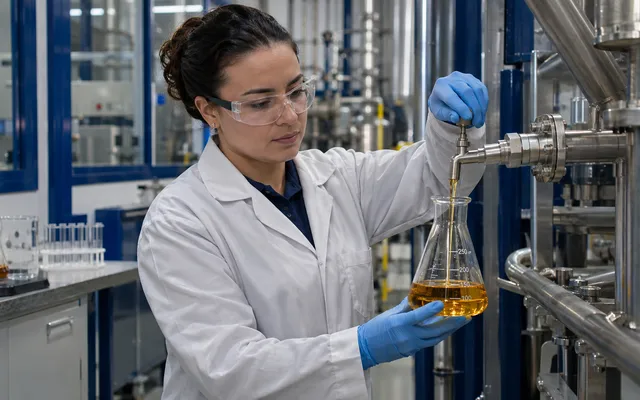
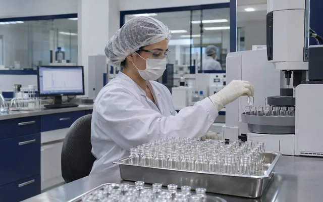
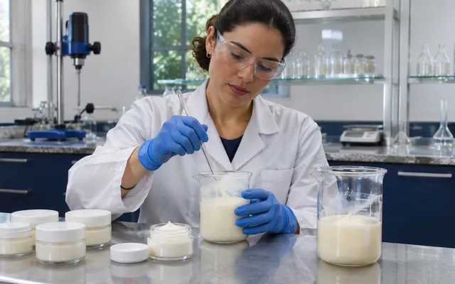
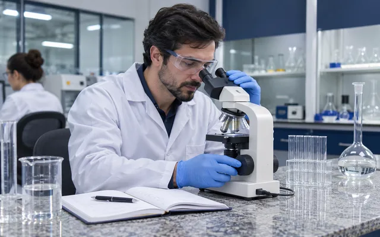
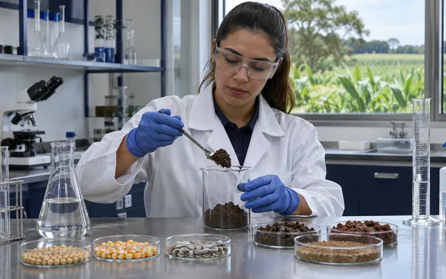
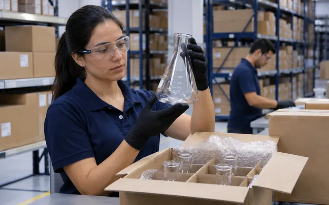

Nossa missão
Fornecer soluções laboratoriais com qualidade, precisão e excelência, contribuindo para o desenvolvimento científico, tecnológico e industrial de nossos clientes.
A Plena-Lab
Há mais de 30 anos, a Plena-Lab fabrica vidrarias e fornece produtos para laboratórios.
Contamos com fabricação própria de vidrarias para laboratórios, oferecendo uma linha completa de artigos, acessórios e equipamentos laboratoriais.
Mais do que fornecer produtos, buscamos construir parcerias sólidas e duradouras, contribuindo para o desenvolvimento científico, tecnológico e industrial.

Fornecer soluções laboratoriais com qualidade, precisão e excelência, contribuindo para o desenvolvimento científico, tecnológico e industrial de nossos clientes.
Ser referência nacional no segmento laboratorial, reconhecida pela qualidade dos produtos, inovação e excelência no relacionamento com nossos clientes.
A Plena-Lab oferece soluções laboratoriais para diferentes segmentos do mercado, atendendo às necessidades de cada cliente com qualidade, precisão e confiabilidade.






Imagens ilustrativas.
Trabalhamos continuamente para oferecer produtos confiáveis, prezando pela qualidade dos materiais, precisão das medições e satisfação dos nossos clientes.
Cuidado com os materiais usados na fabricação das vidrarias.
Opções de calibração para vidrarias laboratoriais.
Orientação para escolher o produto adequado à sua aplicação.
Conte com a Plena-Lab para encontrar as vidrarias e os materiais de que seu laboratório precisa. Nossa equipe pode ajudar você a escolher os produtos e preparar um orçamento.